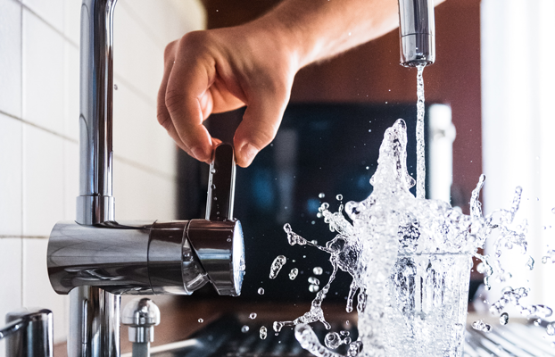
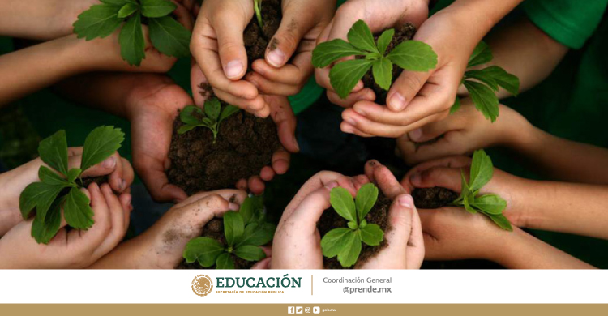

Evita Usar el Auto
La movilidad sostenible es una alternativa para reducir la emisión de los gases de efecto invernadero y mejorar así, la calidad del aire. Según la Organización Mundial de la Salud, la contaminación del aire es ya un problema que afecta no solo a la salud de nuestros ecosistemas sino también a la propia salud humana. Y es que se estima que 7 millones de muertes ocurren cada año debido a este tipo de contaminación.

Ahorrar más agua y evitar su desperdicio
El agua es uno de los recursos más valiosos del planeta, pero también el más escaso. Para proteger este recurso natural evitar su consumo excesivo. Todos los consejos para ahorrar agua en casa son imprescindibles para que este recurso vital para nuestra vida no se agote.

Plantar árboles, sembrar oxígeno
Reforestar es una acción que contribuye a luchar contra el cambio climático. Y es que los árboles no solo nos proveen de oxígeno, sino también absorben CO2 mejorando la calidad del aire. Promover y fomentar su plantación es una forma de salvar el planeta y frenar la crisis climática.
Apostar por la energía verde
El uso que hacemos de la energía tiene un impacto en el planeta. Por un lado, es conveniente reducir el consumo eléctrico para disminuir el impacto ambiental. Y por otro, debemos ser capaces de optar siempre las opciones más verdes y menos contaminantes.
Usar electrodomésticos eficientes
Este gesto está muy vinculado con el anterior. Y es que los electrodomésticos que contribuyen a la eficiencia energética permiten un mayor ahorro de energía. En cualquier de los casos, deben usarse de manera racional.
El turismo sostenible para salvar el planeta
Nuestra forma de viajar también influye en la salud del planeta. Debemos ser capaces de revisar nuestra actividad turística con el fin de elegir aquellas opciones menos contaminantes con nuestro medio natural. Apostar por un turismo sostenible es una forma de que nuestro ocio no repercuta negativamente en la naturaleza.
| Bandera - Contaminacion Oceanica | Pais | % Contaminacion |
| China | 30% | |
 |
Estados Unidos | 15 |
| Union Europea | 15% |
| Bandera - Dioxido de Carbono | Pais | % Contaminacion |
| China | 20% | |
| Estados Unidos | 15 | |
|
Union Europea | 10% |